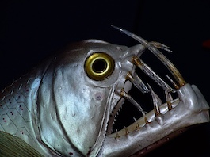

Kalaa kannattaa syödä
Kala on mainio proteiinin lähde ja lisäksi se sisältää runsaasti myös terveellisiä, monityydyttymättömiä rasvoja sekä D-vitamiinia. Näiden hyvien ominaisuuksiensa vuoksi kalaa suositellaankin syötäväksi kahdesta kolmeen kertaan viikossa kalalajeja vaihdellen.
Ekologisuus
Ruoan monipuolisuus, makuelämykset, ympäristömyrkkyaltistuksen pienentäminen ja sesonkitarjousten hyödyntäminen ovat jo oikein hyviä syitä syödä kalaa lajeja vaihdellen. Kuitenkin yksi tärkeimmistä perusteista on ekologisuus ja vastuullisuus, sillä maailman kalakannoista jo kolmasosa on joko romahtaneita, ylikalastettuja tai toipumassa romahduksesta. Kuluttaja voi omalta osaltaan pienentää suosituimpiin lajeihin kohdistuvia pyyntipaineita valitsemalla ostoskoriinsa vähemmän hyödynnettyjä ruokakaloja. Kalansyönnin ympäristönäkökulmaa pohdimme jo aiemmin todetessamme, että järvikalan syöminen on ympäristöteko.
Hyviä kotimaisia kaloja
Rasvahappojen perusteella parhaat kalat ovat lohi, kirjolohi, siika ja silakka. Nämä kalalajit sisältävät runsaasti monityydyttymättömiä rasvahappoja. Lohen kohdalla kannattaa olla tarkkana, sillä vain ASC-sertifioitu ja luomumerkitty lohi ovat WWF:n vihreällä listalla. Kirjolohta ostaessa kannattaa suosia Suomessa verkkoaltaissa kasvatettua kalaa. Perämereltä ja Suomen sisävesistä pyydetty muikku on kannaltaan pääosin kestävällä pohjalla. Listalla olevista lajeista turska, made, ahven ja hauki sisältävät vähiten monityydyttymättömiä rasvahappoja.
Syö kaksi kertaa viikossa
Kala on ylivoimaisesti paras luonnollisen D-vitamiinin lähde. Kalaa kannattaa syödä ainakin 2-3 kertaa viikossa, sillä kala muokkaa ruokavaliota terveelliseen suuntaan. Kun syöt kala-aterian kerran viikossa koululounaalla ja nautit toisen vapaa-ajalla, niin pääset jo tavoitteeseen. Syö vaihdellen eri kalalajeja. Parhaalta kala maistuu, kun sen valitsee tuoreena ja sesongin mukaan. Suomalaisten syömistä kaloista noin puolet on luonnonkalaa. Viljellyistä kaloista kirjolohi ja siika ovat tärkeimmät.
Ei ihan joka päivä näitä kaloja
Isokokoisia silakoita, sisävesien haukea tai Itämerestä pyydettyä lohta suositellaan syötäväksi lapsille tai hedelmällisessä iässä oleville vain 1-2 kertaa kuukaudessa.
Lähde:syohyvin.fi